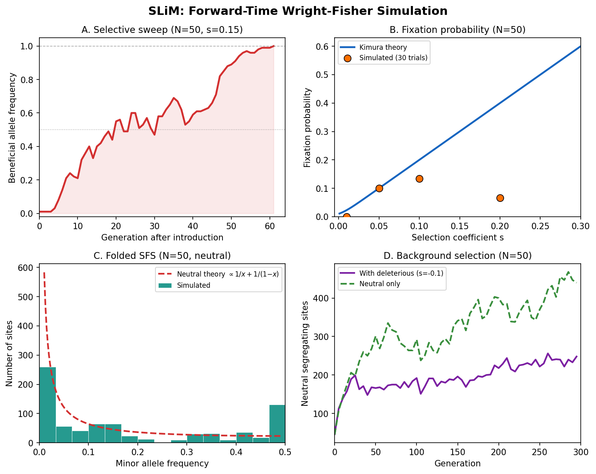

Overview of SLiM
Before firing up the forge, understand what it can build.
{kind=link}

SLiM at a glance. Core capabilities of the mini forward-time Wright-Fisher simulator: allele frequency trajectories under selection showing stochastic fixation and loss, fixation probability vs selection coefficient compared to Kimura’s \(2s\) theory, the site frequency spectrum under neutrality matching the expected \(\theta/k\) pattern, and background selection reducing diversity near a selected locus.
What Does SLiM Do?
Input: A population model – population size \(N\), genome length \(L\), mutation rate \(\mu\), recombination rate \(r\), and a fitness model that maps genotypes to reproductive success.
Output: A population of \(N\) individuals, each carrying two haplosomes (chromosome copies) with mutations accumulated over \(T\) generations of evolution. Optionally, SLiM records the complete tree sequence – the full genealogical history of every base pair in every individual – which can be analyzed with tskit.
The key difference from msprime:
Property |
msprime (Timepiece IV) |
SLiM |
|---|---|---|
Direction |
Backward in time (coalescent) |
Forward in time (Wright-Fisher) |
Selection |
Neutral only (no fitness) |
Full selection models |
Speed |
Very fast (\(O(n)\) in sample size) |
Slower (\(O(N \cdot T)\) in population size and generations) |
Output |
Tree sequence |
Population state (+ optional tree sequence) |
Best for |
Neutral demography, ground truth |
Selection, complex ecology, spatial models |
SLiM is necessary whenever you need natural selection. The coalescent does not model selection well – it assumes all lineages are exchangeable, which breaks down when some alleles have higher fitness than others. SLiM tracks every individual, every mutation, and every fitness effect, so selection falls out naturally from the simulation.
Why Forward Simulation?
The coalescent is elegant because it only tracks the \(n\) sampled lineages, ignoring the vast majority of the population. But this elegance comes at a cost: it assumes neutrality. When selection acts, the genealogy depends on which alleles individuals carry, which depends on the genealogy – a chicken-and-egg problem that the backward-time framework cannot easily resolve.
Forward simulation breaks this circularity by brute force: simulate every individual in every generation. Selection is trivial in the forward direction – individuals with higher fitness leave more offspring. The price is computational: we must simulate all \(N\) individuals for all \(T\) generations, even though we may only care about a small sample at the end.
When to use SLiM vs. msprime
Use msprime when your model is neutral (no selection), or when selection is weak enough to ignore. msprime is orders of magnitude faster for neutral simulations.
Use SLiM when selection matters: selective sweeps, background selection, balancing selection, frequency-dependent selection, local adaptation, or anything where fitness varies among individuals.
Use both together: simulate neutral ancestry with msprime, then “replay” it through SLiM to add selection. Or use SLiM’s tree-sequence recording to get msprime-compatible output. The tools are designed to interoperate.
Terminology
Term |
Definition |
|---|---|
Haplosome |
One copy of the chromosome (SLiM’s term for what is often called a “haplotype” or “gamete”). Each diploid individual carries two haplosomes. |
Mutation type |
A class of mutations sharing a distribution of fitness effects (DFE). For example, “neutral mutations” (\(s = 0\)) and “deleterious mutations” (\(s \sim \text{Gamma}\)) might be two different types. |
Selection coefficient \(s\) |
The fitness effect of a mutation. \(s > 0\) is beneficial, \(s < 0\) is deleterious, \(s = 0\) is neutral. |
Dominance coefficient \(h\) |
How the mutation’s effect manifests in heterozygotes. \(h = 0.5\) is codominant (additive), \(h = 0\) is fully recessive, \(h = 1\) is fully dominant. |
Fitness \(w\) |
An individual’s total reproductive fitness: the product of the effects of all mutations it carries. Determines the probability of being chosen as a parent. |
DFE |
Distribution of Fitness Effects. The probability distribution from which selection coefficients are drawn for new mutations. |
Tick |
One generation in the Wright-Fisher model. |
Tree-sequence recording |
SLiM’s ability to record the complete genealogical history of the simulation, producing a tskit-compatible tree sequence without storing every intermediate state. |
Parameters
Symbol |
Typical value |
Meaning |
|---|---|---|
\(N\) |
1,000 – 100,000 |
Diploid population size |
\(L\) |
\(10^5\) – \(10^8\) bp |
Genome (chromosome) length |
\(\mu\) |
\(10^{-8}\) – \(10^{-7}\) |
Per-bp, per-generation mutation rate |
\(r\) |
\(10^{-8}\) – \(10^{-7}\) |
Per-bp, per-generation recombination rate |
\(s\) |
\(-0.1\) – \(0.1\) |
Selection coefficient (per mutation) |
\(h\) |
0 – 1 |
Dominance coefficient |
\(T\) |
\(10 N\) – \(20 N\) |
Number of generations to simulate (burn-in + observation) |
The Flow in Detail
INITIALIZATION
==============
Create N individuals, each with 2 empty haplosomes
Burn in for ~10N generations to reach mutation-drift equilibrium
|
v
FOR EACH GENERATION (tick):
===========================
|
v
1. RECALCULATE FITNESS
For each individual i:
w_i = 1.0
For each mutation m on haplosome 1:
If m also on haplosome 2 (homozygous):
w_i *= (1 + s_m) <-- full effect
Else (heterozygous):
w_i *= (1 + h_m * s_m) <-- dominance-modulated
For each mutation m on haplosome 2 only:
w_i *= (1 + h_m * s_m) <-- heterozygous
|
v
2. GENERATE N OFFSPRING
For each child:
a. Draw parent 1 with P(parent=i) ~ w_i
b. Draw parent 2 with P(parent=j) ~ w_j
c. From parent 1: recombine haplosomes -> child haplosome 1
d. From parent 2: recombine haplosomes -> child haplosome 2
e. Add new mutations to child haplosome 1 (Poisson)
f. Add new mutations to child haplosome 2 (Poisson)
|
v
3. OFFSPRING REPLACE PARENTS
The N children become the new population
(non-overlapping generations)
|
v
4. BOOKKEEPING
Remove mutations that have fixed (frequency = 1.0)
Remove mutations that have been lost (frequency = 0)
(Optionally: record tree-sequence edges)
|
v
Repeat from step 1
Ready to Build
We have laid out the parts. The mechanism is conceptually simple: a Wright-Fisher population with mutations, recombination, and selection. The complexity lies in doing it efficiently – and SLiM’s source code is a masterwork of C++ engineering – but the algorithm fits on a napkin.
In the following chapters, we build each gear from scratch:
The Wright-Fisher Generation Cycle – The core generation cycle: parent selection, recombination, mutation, and fitness calculation. We implement a minimal Wright-Fisher simulator in Python.
Recipes – Practical recipes: a selective sweep, background selection, and tree-sequence recording. These show the mechanism in action.
Each chapter derives the math, explains the intuition, implements the code, and verifies it works.
Let us start with the escapement: the Wright-Fisher cycle.